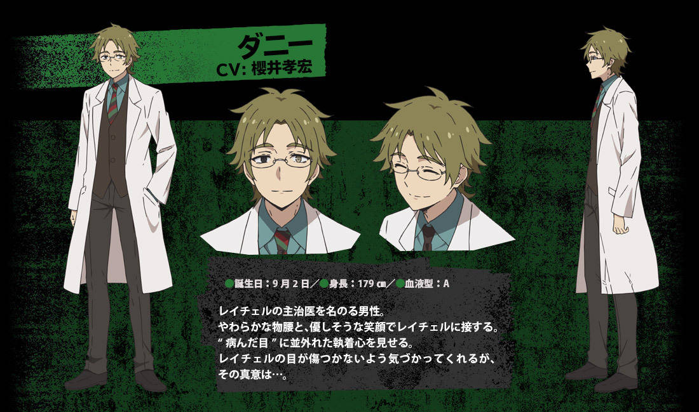
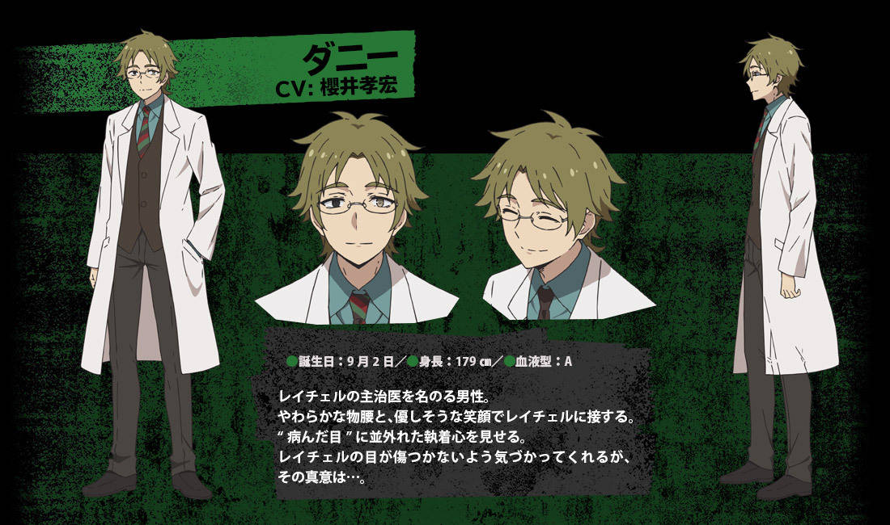

丹尼爾·狄更斯/丹尼
（ダニエル・ディッケンズ/ダニー，Daniel·Dickens/Danny)
- 聲優：櫻井孝宏
Floor B5的層主。生日9月2日。
身穿醫生的白色長袍，戴著眼鏡。茶色頭髮。左眼視力不太好，右眼為義眼（平常是黑色），現出本性時會戴上像亞歷山大石一般有紅綠兩色瞳孔的義眼。
職業為心理醫生。外表非常溫和。對於眼球異常執著，最喜歡與母親相似的藍色眼球；對眼球以外的事物都毫無興趣，而對於眼球沒受他中意的人則不會表示任何關心。

Floor B5的層主。生日9月2日。
身穿醫生的白色長袍，戴著眼鏡。茶色頭髮。左眼視力不太好，右眼為義眼（平常是黑色），現出本性時會戴上像亞歷山大石一般有紅綠兩色瞳孔的義眼。
職業為心理醫生。外表非常溫和。對於眼球異常執著，最喜歡與母親相似的藍色眼球；對眼球以外的事物都毫無興趣，而對於眼球沒受他中意的人則不會表示任何關心。
